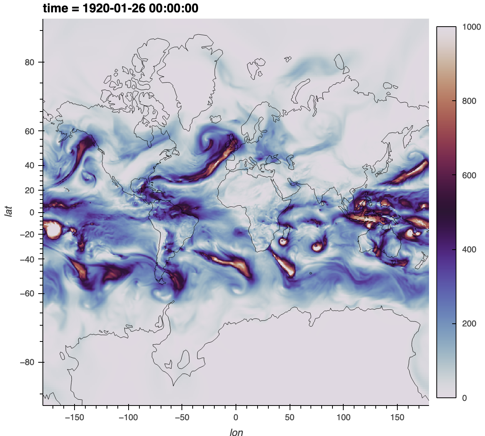

Posts by Christine Shields
Regridding using xESMF and an existing weights file
- 06 December 2022
A fairly common request is to use an existing ESMF weights file to regrid a Xarray Dataset (1, 2). Applying weights in general should be easy: read weights then apply them using dot or tensordot on the input dataset.
In the Xarray/Dask/Pangeo ecosystem, xESMF provides an interface to ESMF for convenient regridding, includiing parallelization with Dask. Here we demonstrate how to use an existing ESMF weights file with xESMF specifically for CAM-SE.
